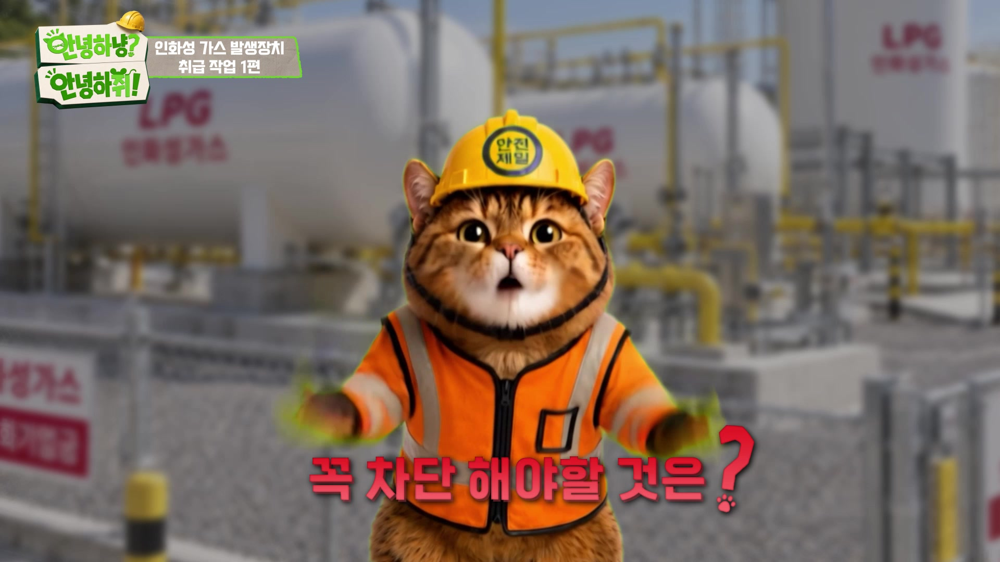

CREATIVE PLANNING
타깃과 메시지를 중심으로
광고 아이디어와 캠페인을 기획합니다.

기획의 의도를 읽고, 장면에 흐름을 더합니다.
영상 편집과 광고 제작을 하는 김영래입니다.
작업을 불러오고 있습니다.
광고의 타깃과 메시지를 고민한
캠페인 기획과 포스터 디자인.
작업 정보: Notion 아카이브 · 2026.10.17 기준
메시지를 고민하는 기획부터, 장면의 흐름을 완성하는 편집까지.
직접 경험한 제작 과정을 바탕으로 작업합니다.
타깃과 메시지를 중심으로
광고 아이디어와 캠페인을 기획합니다.
촬영과 연출부·제작부 경험으로
현장의 제작 흐름을 이해합니다.
컷과 컷을 연결하고,
목적에 맞는 리듬과 구성을 만듭니다.
모션그래픽과 AI 영상 소스로
표현의 가능성을 넓힙니다.
영상 제작과 광고홍보를 함께 공부하며 기획, 촬영, 편집을 경험했습니다. 어떤 메시지를 누구에게 전달하는지 먼저 생각하고, 그에 맞는 장면과 리듬을 고민합니다.
AI 소스를 활용한 모션그래픽과 영상 편집.
15종을 가로·세로로 구성해 총 30편 완성.
현장관리, 촬영진행 및 촬영일정 검수.
필름레시피 · 리암프로덕션 / 2025—2026Premiere Pro / After Effects / Photoshop
생성형 AI / Sony A7M4